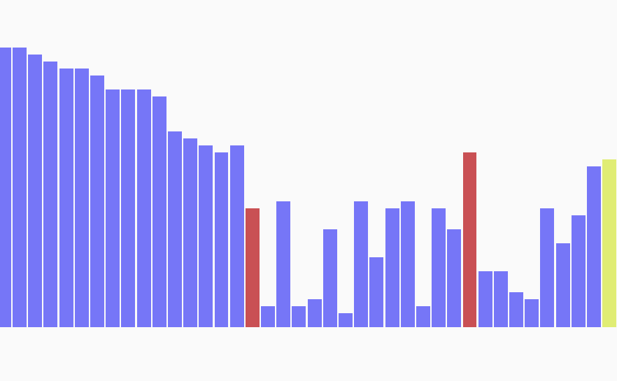

Algorithm's Visualization Tools
Set of applications used for visualizing various graph , sorting Algorithms
Path Finder
Web-based UI application for visualizing path finding algorithms like breadth first search, depth first search, Dijkstra's algorithm in a 2D grid. Also implemented recursive division for creating random mazes in said 2D grid

Sorting Visualizer
Tool for visualization of various sorting algorithms like quick sort, merge sort etc. at various sizes and speeds.
Live Source Code